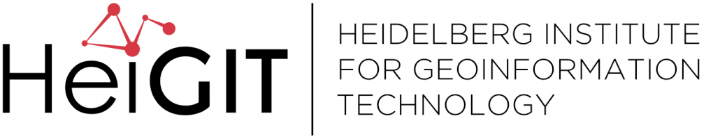

OSM-Transform — Leistungsstarke OSM-Datenvorbereitung für Routing Engines#
Willkommen zum Workshop auf der FOSSGIS 2025 zu openrouteservice und OSM Transform.
Wir beschäftigen uns mit einigen Komponenten aus dem openrouteservice-Universum, konkret:
Wir gucken uns an, wie wir diese selber aufsetzen können, wie sie eingebunden und wie sie genutzt werden
Der Plan für heute#
Zeit |
Thema |
|---|---|
11:10 |
Intro |
11:15 |
Openrouteservice selber aufsetzen |
11:45 |
OSM Transform |
12:00 |
Anwendungsbeispiel: Nächster POI |
12:15 |
Offene Fragen |
12:45 |
Mitagessen |
Wer sind wir#
Julian ist der Product Owner der Technical Innovation Group beim Heidelberg Institute for Geoinformation Technology (HeiGIT), welches unter anderem die Routing Engine openrouteservice entwickelt.
Jakob Schnell nutzt seit über 15 Jahren die OSM und entwickelt seit über 10 Jahren Software. In den letzten 4 Jahren überschneiden sich diese beiden Gebiete durch seine Tätigkeit als Software-Entwickler bei der HeiGIT gGmbH zunehmend. Sein Fokus liegt dabei auf klarer Kommunikation und Prozessoptimierung – sein Hintergrund aus der diskreten Optimierung kommt ihm dabei immer wieder in die Quere.
Er ist als Dozent und Lehrgangsleiter in unversitärem und außeruniversitärem Umfeld tätig.
Kontakt#
Julian Psotta julian.psotta@heigit.org
Jakob Schnell jakob.schnell@heigit.org